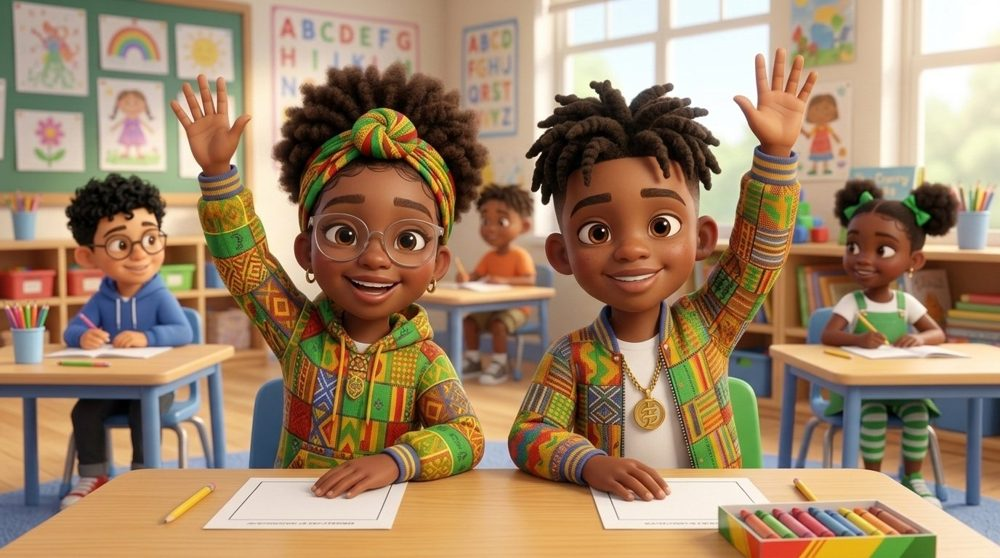

I can get a grown-up's help the safe way
ESPuedo pedir ayuda a un adulto de forma segura.
KRMwen ka jwenn èd yon granmoun nan bon fason.

This topic replaces the lesson content only.
What your child is learning, what we say at school, and three ways to practice “Excuse me” at home. One page per language, two half-sheets per page.
All files for this topic in one ZIP, including the song. Keep the deck and the song in the same folder.